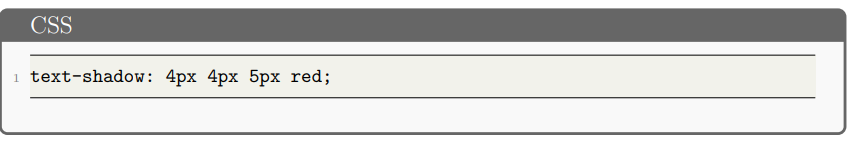

Định dạng văn bản bằng CSS
Kiểu chữ và văn bản cơ bản
Kiểu font chữ
- Màu sắc(color): thiết lập màu của nội dung nền trước của các phần tử được chọn.
- Họ phông chữ(font-family): cho phép chỉ định một phông chữ (hoặc danh sách các phông chữ) để trình duyệt áp dụng cho các thành phần đã chọn.
- Kích thước phông chữ (font-size): Các đơn vị phổ biến nhất mà bạn sẽ sử dụng để định cỡ văn bản là: px, em, rem
- Kiểu chữ, độ đậm chữ, chuyển đổi văn bản và trang trí văn bản: font-style, font-weight, text-transform, text-decoration


- Đổ bóng: Sử dụng thuộc tính text-shadow. Thuộc tính này có thể sử dụng tối đa bốn giá trị: 
Bố cục văn bản
- Căn chỉnh văn bản: Thuộc tính text-align(left, right, center, justify)
- Chiều cao dòng: Thuộc tính line-height
- Khoảng cách giữa các chữ cái và từ: Thuộc tính letter-spacing và word-spacing
Danh sách kiểu dáng
Danh sách trong CSS gồm có ba loại chính: danh sách không có thứ tự (<ul>), danh
sách có thứ tự (<ol>), và danh sách mô tả (<dl>). Mỗi loại có những thuộc tính CSS
riêng để định dạng và tạo kiểu.
Kiểu danh sách cụ thể
- list-style-type: Đặt loại dấu đầu dòng sử dụng cho danh sách, ví dụ, dấu đầu dòng hình vuông hoặc hình tròn cho danh sách không có thứ tự
<ul>hoặc số, chữ cái hoặc số La Mã cho danh sách có thứ tự<ol>
- list-style-position: Thiết lập xem các dấu đầu dòng ở đầu mỗi mục sẽ xuất hiện bên trong hay bên ngoài danh sách.
- list-style-image: Cho phép bạn sử dụng hình ảnh tùy chỉnh cho dấu đầu dòng, thay vì hình vuông hoặc hình tròn đơn giản.

Kiểm soát danh sách đếm
- start: Bắt đầu danh sách từ một số khác 1.

- reversed: Đếm ngược. Thuộc tính đảo ngược sẽ bắt đầu đếm ngược danh sách thay vì đếm lên.

- value: Đặt giá trị cụ thể cho một mục trong danh sách.

Tạo kiểu cho liên kết
Trạng thái liên kết
- Link (Liên kết)
- Visited (Đã truy cập)
- Hover (Di chuột qua)
- Focus (Tiêu điểm)
- Active (Đang hoạt động)
Liên kết mặc định
Đặc điểm: Được gạch chân. Khi chưa được truy cập sẽ có màu xanh. Khi di chuột vào liên kết, con trỏ chuột sẽ chuyển thành biểu tượng bàn tay nhỏ.

Thứ tự các quy tắc CSS quan trọng

Để nhớ thứ tự, bạn có thể thử sử dụng một mẹo ghi nhớ như LoVe Fears HAte.
Thêm biểu tượng vào liên kết
Biểu tượng được thêm vào liên kết ngoài để cung cấp thêm chỉ báo về loại nội dung mà liên kết trỏ đến, bằng cách sử dụng phần tử giả ::after và thuộc tính background-image

Tạo kiểu cho liên kết như nút
Tạo kiểu cho liên kết như nút nhằm biến một thẻ liên kết (thường là thẻ <a>) để tạo ra các liên kết điều hướng đến một trang web khác, một tài liệu hoặc một phần cụ thể trong trang.